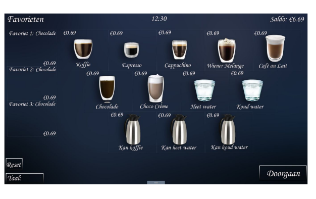
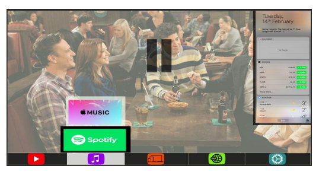
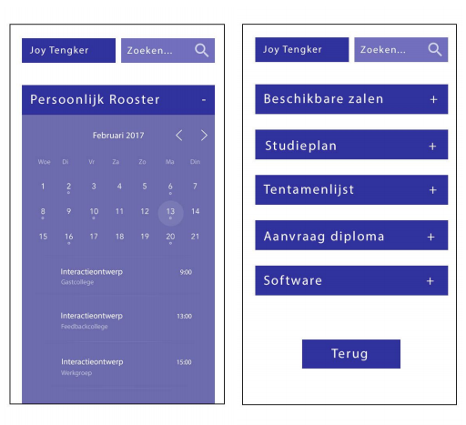
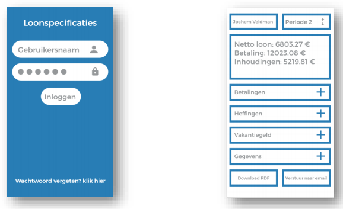

Hallo en welkom!
Ik hoop dat je deze website mooi vind
en dat je wat hebt aan mijn groepsopdrachten,
er zit best veel tijd in.
Hieronder staan alle groepsopdrachten waar ik aan heb meegedaan
Klik op de afbeelding om deze te downloaden!
Veel lees- en kijkplezier!
Voor dit vak werden we de eerste vier weken ingedeeld in groepjes van 4.
Met deze groepjes moest er welke week een opdracht ingeleverd worden.
Voor de opdrachten had elk lid elke week een andere rol.
Er waren vier rollen dus elk lid had na afloop elke rol gehad.
De rollen waren: Facilitator, Interactie ontwerper, Grafisch ontwerper en Technisch ontwerper.
In de opdrachten staat steeds aangegeven wie welke rol speelde.
In de eerste twee weken stonden de opdrachten vooral in het teken van conceptontwikkeling.
In de derde en vierde week draaide het bij de opdrachten vooral om het goed krijgen van de details
en dus moesten deze zo volledig mogelijk worden uitgewerkt.

Voor de eerste week was het de bedoeling dat we een opdracht kozen
uit een lijst met opdrachten die we vervolgens zouden moeten uitwerken.
Wij kozen in de eerste week voor de opdracht
waarbij we de interface van de koffiezetapparaten moesten aanpassen.
De opdracht is als volgt:
De koffieautomaten van de UvA hebben geen fantastische interface.
Doe een usertest, en ontwerp een beter alternatief,
dat hetzelfde of minder kost om te maken

Voor de tweede week was het de bedoeling dat we een opdracht kozen
uit een lijst met opdrachten die we vervolgens zouden moeten uitwerken.
Wij kozen in de tweede week voor de opdracht
waarbij we de interface van een smart tv moesten maken.
De opdracht is als volgt:
Ontwerp een interface voor een smart-TV

Voor de derde week was het de bedoeling dat we een opdracht kozen
uit een lijst met opdrachten die we vervolgens zouden moeten uitwerken.
Wij kozen in de derde week voor de opdracht
waarbij we een ontwerp moesten maken voor de mobiele versie van datanose.
Dit moest aan de hand van user-stories die ook beschreven moesten worden.
De opdracht is als volgt:
De UvA wil dat Datanose ook goed werkt op mobiele telefoons.
Zoek uit welke user stories specifiek op mobiel belangrijk zijn,
een maak voor die user stories een gedetailleerd ontwerp van de mobiele datanose.

Voor de vierde week was het de bedoeling dat we een opdracht kozen
uit een lijst met opdrachten die we vervolgens zouden moeten uitwerken.
Wij kozen in de vierde week voor de opdracht
waarbij we de interface van loonstrookjes opnieuw moesten ontwerpen
zodat het voor menigeen duidelijker wordt.
De opdracht is als volgt:
Loonstrookjes zijn doorgaans onbegrijpelijk.
Neem je eigen loonstrookje, of vind een voorbeeld online.
Herontwerp het op basis van user stories. Zorg dat het op papier blijft werken,
maar bedenk ook extra functionaliteit voor mensen die hun loonstrookje online bekijken.